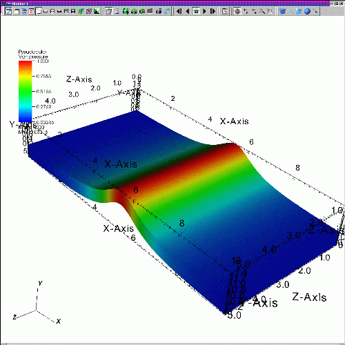

|
| Figure 5 |
You can invoke VisIt from the command line on UNIX and MacOS X platforms by typing: visit . It is worth noting that VisIt must currently be launched from the Terminal application on MacOS X, though launching via double-clicking will one day be possible.
On the Windows platform, the VisIt installation program adds a VisIt program group to the Windows Start menu and it adds a VisIt shortcut to the desktop. You can double-click on the desktop shortcut or use the VisIt option in the Start menu's VisIt program group to launch VisIt. In addition to creating shortcuts, the VisIt installation program creates file associations for .silo, .visit, and .session/.vses files so double-clicking on files with those extensions opens them with VisIt.
When you run VisIt at the command line, you can provide various command line options, which are listed in Appendix A. It is best to have VisIt in your default search path instead of specifying the absolute path to VisIt when starting it. Having VisIt in your default search path isn't important when VisIt is run locally, but VisIt may not run properly in distributed mode if the visit command isn't in your default search path on all the machines on which you are running VisIt. When VisIt first launches, it opens two windows that fill as much of the screen as possible. figure contains the most common window layout.
|
| Figure 5 |
|  |
| Figure 6 |